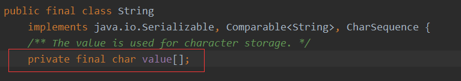
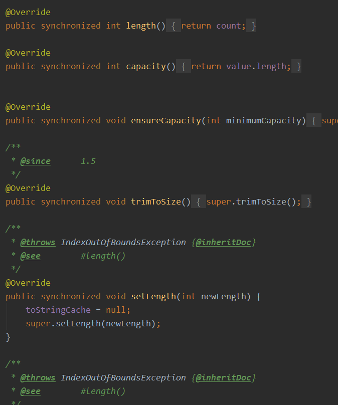

先来说说什么是JDK，JRE。
JDK：Java Development Kit Java开发工具包【开发Java程序用】
JRE：Java Runtiome Environment Java运行环境【运行Java程序用】
【注：下载的JDK包是包含了JDK和JRE的，JDK和JRE是逻辑上的区分，两者在JDK下载的包中都有】
JDK与JRE的关系：以Java代码运行为例，编写好Java代码之后，通过javac将java源文件编译成class字节码文件,然后通过java命令，运行字节码文件。那么运行字节码的环境就是JRE。（JRE的核心就是JVM）
了解完JDK和JRE是什么之后，再聊聊为什么开发者当时要把一个安装包分成两部分呢？
平常使用的软件都是一键安装的，但JDK需要安装两次。JDK的发明者不会这么无聊，故意给开发者增加麻烦。
【我想】：这应该跟生产环境的部署问题有关，关于生产环境部署JDK还是JRE一直饱受争议，具体情况根据项目而定。
出于对性能的考虑，尽可能的使服务器轻，能少装一个软件就少装一个，这样生产环境部署JRE就OK了。【又省了资源】
除了这个方面之外，还有一种可能。JDK的开发也有可能是分团队的，JDK和JRE可能是交由不同团队开发，JDK和JRE的耦合也可能因此而减小，从而加快JDK的迭代版本。（毕竟现在JDK一年更新两次）
跨平台和Java 虚拟机有关。
JVM有两个主要的功能：
（Oracle官网上下载JDK，不同操作系统的JDK是不一样的，对应不同的虚拟机）
这个就跟JVM有关了，先来了解一下什么是JVM：
JVM：Java Virtual Machine Java虚拟机
JVM的主要作用就是将class字节码文件翻译成机器码（01）供给计算机执行。
跨平台——Java程序可以在多种平台上运行。
平台指的是操作系统，目前主流的操作系统：Windows，Mac，Linux。
以日常软件为例，同一个软件的win版和mac版是分开的。但是功能却是基本相同的。
JVM同样如此，也有win版，mac版以及linux版。安装在不同的平台上的JVM虽然有所差异，但都能完成同样一件使命——将class文件翻译成机器码。
概括来说，JVM有两个功能：其一是，其二是翻译class字节码文件。
在解决这个问题之前，先解决环境变量是干嘛的：
运行一个程序（命令），系统从当前目录寻找，或者从环境变量中寻找。
换句话说，如果在java，javac的目录下执行这个两个命令，是没有问题的。但是如果更换了目录，系统在当前目录找不到，就会去环境变量中寻找。所以设置环境变量的根本目的是在电脑的任何一个文件夹下都可以编译运行Java程序。
Integer 是引用类型,默认值是null。而int是是值类型默认值是0
可变性
String是不可变的，StringBuffer和StringBuilder是可变的
安全性
StringBuffer和String是线程安全的，，StringBuilder是线程不安全的
【解释】
聚焦：可变性，安全性
String 底层使用final修饰的数组实现

线程安全问题
String 中的对象是不可变的，也就可以理解为常量，线程安全。
StringBuffer 对方法加了同步锁或者对调用的方法加了同步锁，所以是线程安全的。

StringBuilder 并没有对方法进行加同步锁，所以是非线程安全的。
对于三者使用的总结：
没有。
因为String被设计成不可变(immutable)类（final修饰），所以它的所有对象都是不可变对象。
在这段代码中，s原先指向一个String对象，内容是 "Hello"，然后对s进行了+操作
这时，s不指向原来那个对象了，而指向了另一个 String对象，内容为"Hello world!"
原来那个对象还存在于内存之中，只是s这个引用变量不再指向它了。
前者会被JVM分配到常量池中，常量池中没有重复的元素。
String str1 =“i”;
String str2 =“i”;
str2不会重新创建一个常量，而是指向str1。
String str1 = new String("i");
String str2 = new String("i");
str1会在堆内存中创建对象
str2还是会再次创建一个新的对象
使用StringBuilder或者StringBuffer的reverse()方法。
StringBuffer str1 = new StringBuffer("12345");
StringBuffer str2 = str1.reverse();
System.out.println(str2);
==：
equals：
通常会被重写，比较引用类型的内容是否相同
int x = 7;
int y = 7;
//比较基本数据类型的值
System.out.println(x==y);
String str1 = new String("123");
String str2 = new String("123");
//比较引用类型的内存地址
System.out.println(str1==str2);
//比较引用类型的内容是否相同
System.out.println(str1.equals(str2));
&和&&表示逻辑与，两边同时为true时才为true。
&&具有短路功能，&&左边为false时，右边表达式不会执行。
Math类中提供了三个与取整有关的方法：
ceil（向上取整）、floor（向下取整）、round（+0.5后四舍五入）
Math.ceil(11.3)的结果为12
Math.ceil(-11.3)的结果是-11
Math.floor(11.6)的结果为11
Math.floor(-11.6)的结果是-12
Math.round(11.5)的结果为12
Math.round(-11.5)的结果为-11。